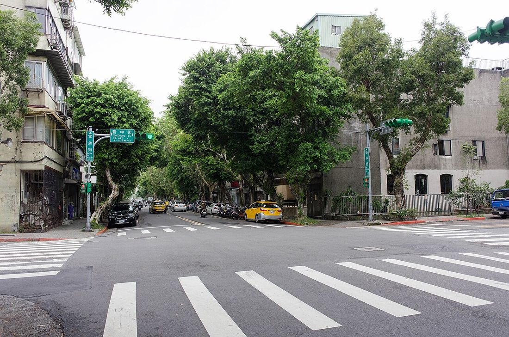
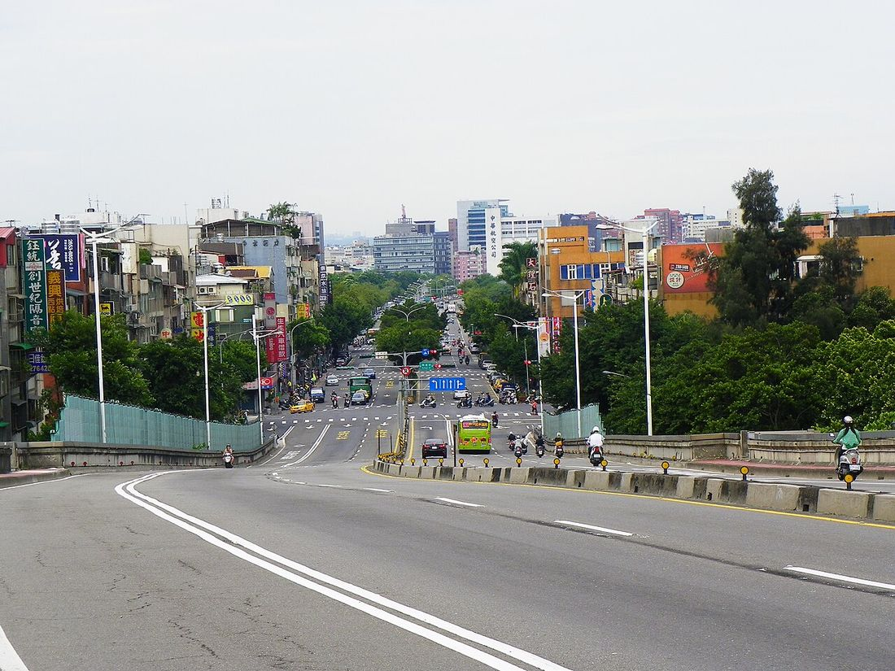
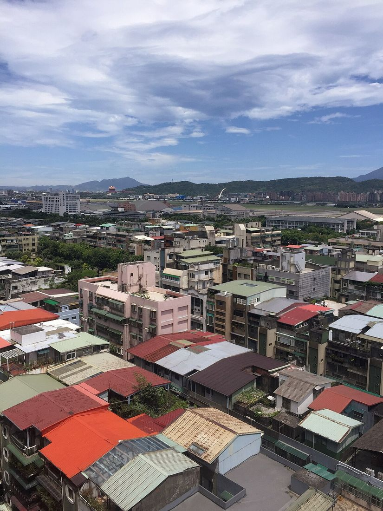
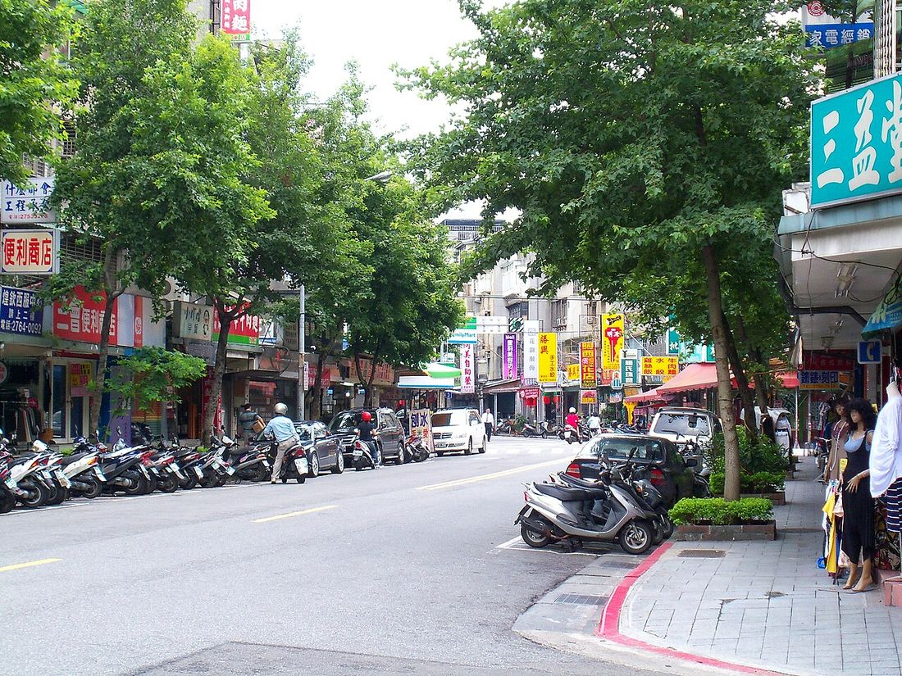
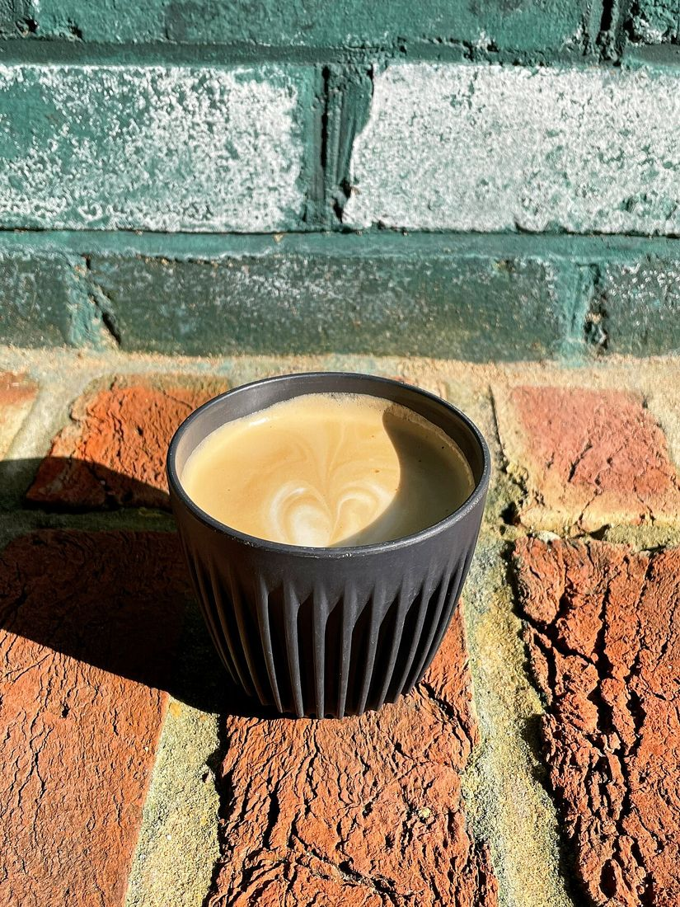

台北老店．天母、士林與民生社區
富錦街：沒有捷運的咖啡街
附近沒有捷運站，卻有很多人專程來喝咖啡：台北富錦街。

一個用美援蓋的社區
富錦街在民生社區，一九六七年開始規劃，用了五百萬美元的美援貸款，報導說是台灣第一個全國性的美式示範社區。
因為靠近松山機場，房子不能蓋得太密；社區裡有二十多座公園，每人平均約三坪綠地。
為什麼咖啡館聚在這裡
二〇一一年的報導統計，這裡約四千五百家公司，設計、影視相關的就有兩百二十家。
二〇〇七年，旅居墨爾本的建築師楊啟鉉接手一家老咖啡館，一張大長桌可坐二十五人。
電影《第36個故事》也在這裡取景。設計師、廣告人搬進來，咖啡館和小店一家接一家開。
二〇二四年，那家長桌咖啡館搬到對街，繼續營業。
專業點：小白咖啡和拿鐵差在哪
・小白咖啡＝濃縮＋蒸氣牛奶＋一層薄細奶泡
・以 30ml 濃縮來比：拿鐵加 3–9 倍牛奶
・小白咖啡約 4 倍，奶泡更少、口感更絲滑
・起源澳洲還是紐西蘭，到現在還有爭議
老照片與街景




店家資訊
- 店家
- 富錦街
- 地點
- 台北市松山區（民生社區，敦化北路至三民路一帶）
- 現況
- 營業中
- 營業時間
- 常有變動，出發前請再確認
- IG 影片
- 1/29 上片
你在富錦街最常去哪一家？留言推薦給大家。
到 IG 留言告訴我們
到 IG 留言告訴我們